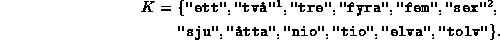

Data Structures and Algorithms
with Object-Oriented Design Patterns in Java
Data Structures and Algorithms
with Object-Oriented Design Patterns in JavaWe wish to implement a searchable container which will be used to contain character strings from the set of strings K,

Suppose we define a function as given by the following table:
| x | h(x) |
| "ett" | 1 |
| "två" | 2 |
| "tre" | 3 |
| "fyra" | 4 |
| "fem" | 5 |
| "sex" | 6 |
| "sju" | 7 |
| "åtta" | 8 |
| "nio" | 9 |
| "tio" | 10 |
| "elva" | 11 |
| "tolv" | 12 |
We expect that any reasonable implementation
of the function  will run in constant time,
since the size of the set of strings, K, is a constant!
This example illustrates how we can achieve O(1) performance
in the worst case when we have complete, a priori knowledge.
will run in constant time,
since the size of the set of strings, K, is a constant!
This example illustrates how we can achieve O(1) performance
in the worst case when we have complete, a priori knowledge.
 Copyright © 1998 by Bruno R. Preiss, P.Eng. All rights reserved.
Copyright © 1998 by Bruno R. Preiss, P.Eng. All rights reserved.